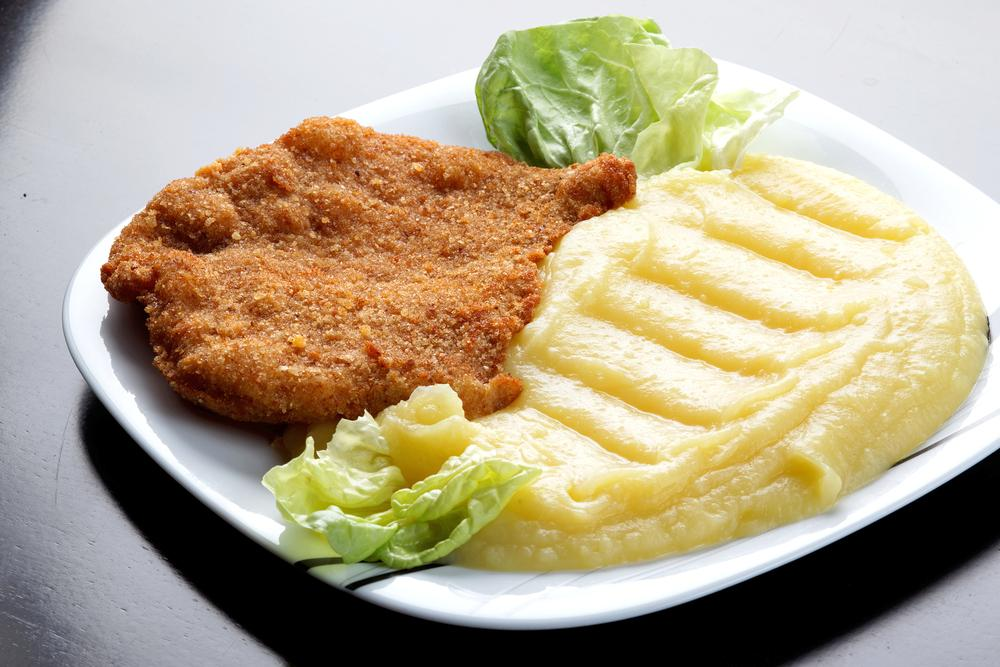

Milanesa with Pure

Milanesa con pure
Suele comerse como un plato principal acompañado de contornos como arroz, ensalada, puré o verduras al horno,
también es válido hacerlo con papas fritas.
ingredientes
- 1 bife de carne vacuna
- Huevos batidos
- Pan rallado
- Ajo
- Sal
- Aceite
Pasos a seguir
- mojar las milanesas en huevo
- pasarlas en harina
- volver a mojarlas con huevo
- pasarles pan rallado
- llenar una sarten alta con suficiente aceite para cubrir las milangas
- con cuidado de no morirte en el intento, pon las milanesas
- cuando esten marroncitas, apagar el fuego y retirlas con cuidado segun estandares ISO.
- para el pure, compraras uno instantaneo y seguiras los pasos del projecto ToDo list culinario adjunto al sobre